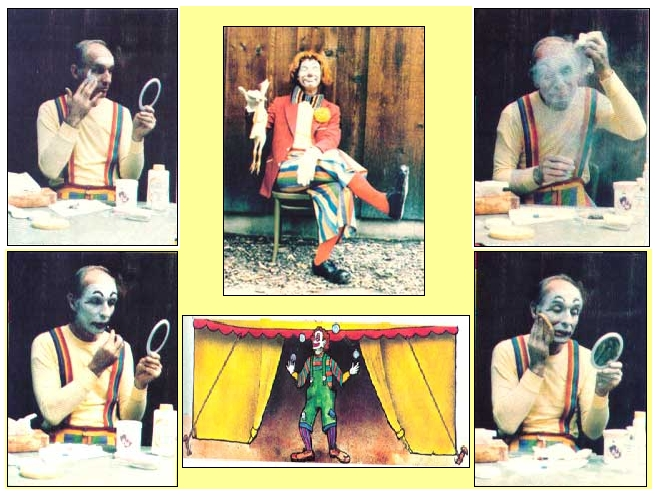
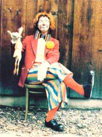
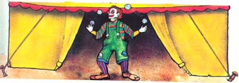
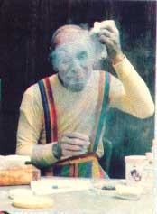
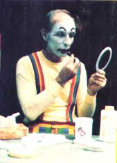
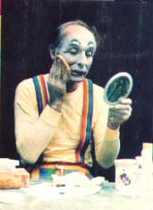

"Be a Clown! Be a Clawn! All the world loves a Clown! (Cole Porter, The Pirate)
Thomas Niccolls
My interest in clowning dates back to the late 1960's, a grim period of protest and social unrest. At that time, I came to believe that humor could be valuable medicine in a world that seemed bent on following its own destructive course. The clown character held personal appeal for me, too, because I was then struggling through the trauma of turning 40... so when "Nibs" popped out of my psyche, his lighthearted influence was more than welcome.
As many of you likely know, clowning is an ancient and honorable art. Furthermore, the pastime requires more than simply donning a silly costume and greasepaint... it involves discovering the clown that resides inside you. I think all of us have one, but most folks spend their lives keeping that "spirit" contained.
HOW TO BRING OUT THE CLOWN WITHIN
You can easily begin to free your own clown character, though, if you simply list a number of adjectives or phrases that you believe are descriptive of your personality. Let's suppose, for example, that you write down "shy", "loves animals", "enjoys singing", and "jogger". That catalog denotes the "normal" you. . . and refers to the activities you're most likely to engage in, and the feelings you're likely to demonstrate, on a day-to-day basis. The clown inside you includes those, of course, but will also embrace their opposites .
So, take your list and write down opposing qualities. . . "outgoing", "afraid of animals", "unmusical", "sedentary", and so on. After all, there are times in your life when an atypical "you" seems to pop out, right? Good clowning, then, allows you to experience-and make good use of-the whole range of thoughts and feelings that create your personality. That's why clowns not only laugh . . . but also weep copious tears. It's why they can often nimbly juggle and at the same time stumble over their own big feet. One minute a clown might strut around like Mr. Universe and the next minute be trembling like a scared rabbit.
Therefore, if you want to develop a true clown, you'll need to spend a lot of time thinking about your fantasies, dreams, goof-ups, and embarrassing moments. Then, when you understand that character's personality, pick out a moniker that expresses your clownish side. Flower, spice, or insect names are popular choices. Are you a "Doodlebug" perhaps? How about "Cinnamon" or "Petunia"?
THE ROAR OF THE GREASEPAINT . . .
Now that you've thought through your ideas and "conceived" your clown, how do you give birth to him or her? Well, it's best to start by designing the makeup for your face. Check the Yellow Pages for theatrical supply stores, and pay a visit to one of them. A salesperson should be able to outfit you with everything you'll need . . . but here's a basic shopping list for you to keep in mind: greasepaint (either little pots of it or pencils) in clown white and black, and also in one or more vivid colors such as red, blue, or purple... a black grease pencil (for outlining) . . . and white powder. Load up on plenty of cold cream, tissues, and baby oil at the drugstore, too . . . and also purchase a sponge and a soft brush (something similar to a shaving brush will do the trick).
OH FUNNY FACE!
I've found that a makeup routine can be reduced to seven easy steps: First, smear a small amount of cold cream, using upward strokes, over your face ( and neck and ears, if you're a full white-face clown) to fill in the pores and make removing the greasepaint, when your day's clowning is done, easier. Second, apply the clown white. Start with a thin coating and add to it gradually. (Most beginning clowns wear too much.) Then smooth the white out with your fingers in firm downward strokes.
The third step is to apply the colors you've selected for your mouth, nose, and eye area . . . and such other ac cents as stylized round cheek spots. If you want a red rubber nose, you can simply obtain one at a theatrical supply store ... or you can make your own substitute by cutting a ping-pong ball in half and painting it with latex. Hold the homemade schnoz in place with monofilament fishing line, which is practically invisible, and use a thin rubber band at the back of your head to provide enough elastic to allow you to put the nose on and take it off easily.
Step four will make your spots of color stand out: Outline each area with the black grease pencil.
When that's done, it's time to take step five, which separates true clowns from amateur "greaseballs". Find an old, clean sock . . . fill it with a handful of powder . . . shake it to get the powder sifting through . . . and "throw" it toward your face. (A big powder puff would serve the same purpose.) Keep this up until there's a fine, even layer of powder on your face, which will dry up the grease.
After you're thoroughly powdered, remove any excess with the soft brush. Use a light touch while doing so, being careful not to smear your lines! Finally, pat a damp sponge-lightly-over your entire face . . . to absorb any loose powder. This should leave your face feeling neither greasy nor dry, and all the colors will show bright and true.
PRACTICE MAKES PERFECT
Even though you now know my basic technique, it'll take both time and patience to develop your own face makeup. You'd probably be best advised to keep it simple . . . and not to make the features too large.
Most beginners, it seems, add too many symbols to their faces (butterflies, balloons, and flowers are among the common ones). Do experiment with them, by all means, but I think you'll find that your clown face will be more expressive and less "busy" if you simply emphasize your mouth, eyes, and nose.
In doing so, you'll have to study the natural shapes and lines of your features. If your face is round, for instance, consider accentuating that fact by making your eyes and mouth appear rounded, too. You might also want to color your lower lip red and leave the upper lip white. This will give greater flexibility to your expressions. Learn which parts of your face move as you smile, frown, and so forth. With color added at the appropriate points, you can manipulate the muscles in your face to convey-strongly-your different moods.
One last tip on makeup: Baby oil-when it's liberally applied and wiped off with tissue-is great for removing greasepaint. Cold cream works fine, too. Whatever you do, though, don't try to wash the greasepaint off with soap and water... or you'll have a real mess on your hands ( and face!).
"I HAVEN'T A THING TO WEAR!"
Most closets have plenty of clown costumes lurking in them, just waiting for the magic touch of creativity. My first clown coat was made from the inside liner of an old raincoat ... a nice black, fuzzy thing which I promptly adorned with brightly colored patches, bells, and other trimmings. Yellow tights and a fool's cap completed my jester clown's wardrobe.
You might also try hunting around garage sales and secondhand shops for old formal wear to create an interesting "tramp" clown. Wigs are simple to fashion from yarn stitched to a child's pair of stretch panties (with the legs sewn shut).
Oversized shoes can be created by simply finding large-sized thrift-shop tennies and fitting the "boats" over your own. One of my friends stitched a neat pair of clodhoppers from a castoff leather coat. (Professional clown shoes run from $50 to $100, so it's best to try the homemade approach before buying.)
ALL DRESSED UP AND NO PLACE TO GO?
A clown ought to be able to find lots of opportunities for work. Children's birthday parties are a good source of jobs, for instance. The clown can enter the party to present the birthday cake . . . pass out party favors... or even lead the children in some games. One word of caution: Children under four are usually frightened by strange-looking critters like clowns, so warn mothers that little tots might not react favorably. It's also wise to let the youngsters come to you, rather than to approach them. That way you'll know they're ready for your attention.
You will, of course, want to develop and maintain a repertoire of gags or stunts. If you're musically inclined, you might even carry an instrument, or sing. Other talents, such as sketching and storytelling, can be worked into a clown routine, too. And puppets can be useful props, as can invisible trained flea acts (just mime them).
THE MESSAGE IN YOUR MADNESS
Clowning can be used to demonstrate a gentle approach to life which underscores the simpler way of living that most readers of this magazine strive to achieve. Think of the possibilities, for example, of a good clown skit that conveys the difference between a high-consumption lifestyle and a natural, more environmentally acceptable way of doing things.
Often, in times past, only court jesters and clowns were allowed to speak out the words of wisdom their world sorely needed to hear. In fact, back in 1917 a French author by the name of André Suarés wrote: "The art of the clown is more profound than we think; it is neither tragic nor comic. It is the comic mirror of tragedy and the tragic mirror of comedy." And the poet John Donne penned a similar sentiment in 1633: "Who are a little wise, the best fools be."
EDITOR'S NOTE: Readers interested in learning more about clowning can contact the Clowns of America Club, Dept. TMEN, P.O. Box 3906, Baltimore, Maryland 21222. (Enclose a dollar with your query to help the nonprofit organization defray expenses.)
|
 |
 |
 |
|
 |
 |
 |